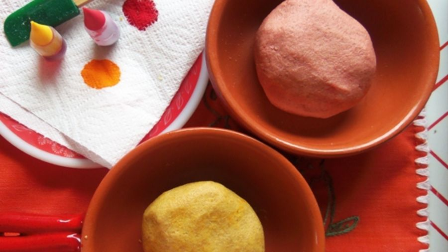
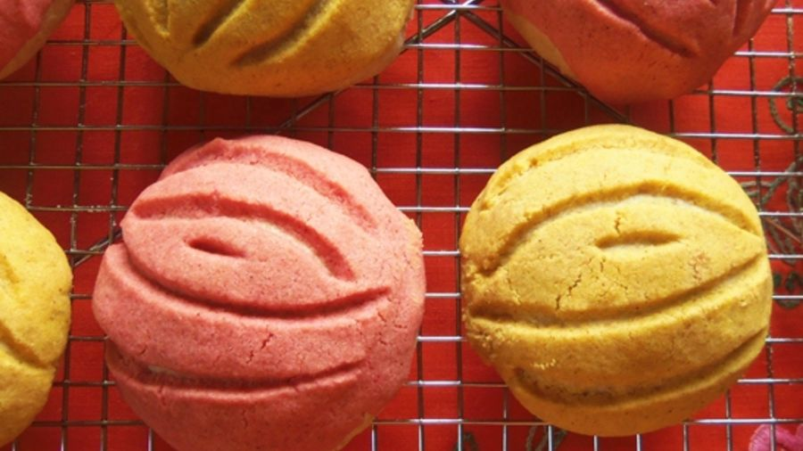

* 1 pack of active dry yeast
* 1/2 cup of warm water (115 degrees F)
* 1/2 cup of warm evaporated milk (115 degrees F)
* 1/3 cup of sugar
* 1/3 cup of melted butter
* 1 egg

* 1 teaspoon of salt
* 3 cups of multipurpose flour
* 1 cup whole wheat flour
* 1/2 teaspoon ground cinnamon
*1/2 teaspoon ground anise
Scratching an orange
* 1/2 cup of soft butter

* 2/3 cups of sugar
* 1 cup of multipurpose flour
* 2 teaspoons ground cinnamon
* 1 teaspoon vanilla
* Red and yellow coloring for food
1. In a large bowl, mix the yeast and warm water. Let stand for 10 minutes.
2. Add milk, 1/3 cup sugar, 1/3 cup butter, egg, orange zest and salt. Gradually add the flour, 1/2 teaspoon of cinnamon and 1/2 teaspoon of anise.
3. Transfer the dough to a floured surface. Knead between 3 and 5 minutes.
4. Form a ball. Transfer the dough to a large oiled container and stretch evenly. Cover and let rise in a warm place for 1 hour and 20 minutes
5. In a bowl, beat the soft butter in the blender for 30 seconds. Add 2/3 cups of sugar and continue whisking until well blended. Add the cup of flour, the 2 teaspoons of cinnamon and vanilla. Divide this preparation for decoration in half, and transfer it to two glass containers.
6. Add a couple of drops of food coloring, separately for each container, until you have achieved the color you want.
7. Hit the dough. Cover and let stand for 10 minutes.
8. Divide the dough into 12 uniform balls. Place the balls about 3 inches away on baking trays lined with waxed paper. Press lightly on each ball. Divide the preparation for decoration into 12 balls and crush each one. Place a crushed ball on top of each dough ball.
9. With a sharp knife, make small cuts on the top to imitate the grooves of the scallop shells. Cover and let rise in a warm place for another 45 minutes.
10. Meanwhile, preheat the oven to 375 degrees F. Bake the buns for 15 to 20 minutes or until golden brown. Remove from the trays. Let them cool on a rack.